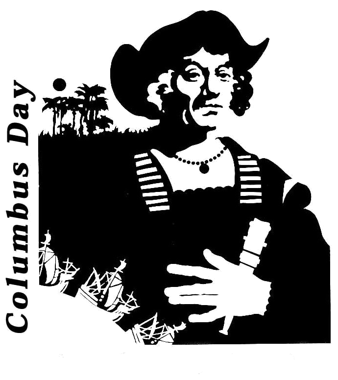

Day 21
All About Columbus Day
Today you'll learn all about this holiday. Columbus was not the best human being to ever live on the planet, but at least you'll have less to do today. Enjoy!
Art
- Follow this video to draw a ship like the ones that Christopher Columbus sailed.
Day 22
Reading
- Today we'll start our study of classic horror tales. Every day this week you'll be reading a short story from a different author.
- Next week we'll begin a new book.
- Read The Cask of Amontillado by Edgar Allan Poe.
Computer
- Another piece to your browser’s memory is called cookies. Cookies are what enable your browser to remember your usernames and passwords and what things you normally search for; also enables stores to follow what pages you look at on their websites to know what you might be interested in. Yes, it's also a way for websites to collect information on your activities! Finding and clearing cookies are different for every browser. For the Edge browser, the steps are:
- Open Microsoft Edge.
- Click on More options (… symbol) on the top right corner of the browser.
- Select Settings from the drop down menu.
- Click on Choose what to clear under
- Clear browsing data.
- Check the Cookies and saved website data (and any other data you want to clear) and click on Clear button.
- Warning: You'd think that it would be a good idea to clear your cookies, and it is, but remember that, if you delete all of your cookies, sites won’t remember your usernames and passwords for you anymore. We get so used to having them filled in for us that we forget what they are. If the computer isn't yours, don’t delete anything without permission.
- Watch: What Is Code?
- This week you'll begin to learn about HTML, which is short for "HyperText Markup Language." That may sound scary, but it simply means it is a language for describing web pages using ordinary text. HTML is not a complex programming language.
- Every web page is actually an HTML file. Each HTML file is just a plain-text file, but with a .html file extension instead of .txt, and is made up of many HTML tags as well as the content for a web page. A web site will often contain many html files that link to each other. You can edit HTML files with your favorite editor.
- HTML tags are the hidden keywords within a web page that define how your web browser must format and display the content.
- Watch this HTML Overview.
- Watch these HTML video tutorials. Don't worry about memorizing everything for now. You will remember everything better when we start doing exercises next week.
Reading / Writing - Poetry
- Read this pdf on types of poetry.
- Write one diamante and one sensory poem following the directions carefully.
Words of the Day:
Write the two words below in your vocabulary book along with their short definitions. Also, click on the link for each word, and read more about the definition.
- fabricate - put together out of artificial or natural components
- feral - wild and menacing
Grammar
- Take this grammar quiz.
- Then check your answers, Units 1-4: Cumulative Review. If you got any wrong, go back and look at the right answer. Can you figure out what went wrong? If not, ask me, and we'll review.
Math
- Watch this video about multiplying by 10, 11, and 12.
- Multiplying by 10 is easy: 1 x 10 = 10, 2 x 10 = 20, 3 x 10 = 30, etc.
- You can multiply by 11 and 12 using the method we learned to multiply by a 2-digit number, but it will be useful to you if you memorize these tables as well.
- Multiplying by 11 is easy, too: 1 x 11 = 11, 2 x 11 = 22, 3 x 11 = 33, etc. The only ones that are tricky are 11 x 11 = 121 and 12 x 11 = 132.
- Copy this worksheet for multiplication by 10, 11 and 12 in your notebook. As you copy, try to memorize each one. The worksheet is in your folder.
- You can practice more here. Click on 11, then test; also, click on 12, then test.
Day 23
Reading
Writing
- Refer to "The Monkey's Paw," the first story you read: Write a short paragraph to answer each of the following. Remember that there are no right or wrong answers.
- If you were given three wishes, what would you wish for? Remember, be smart about this and give it plenty of thought. You don't want to make the same mistakes the Whites do.
- Do you think Mr. White's second wish came true? We never see an undead version of Herbert in the story, we only hear someone knocking on the White's door. Can you think of any other explanation for the sound?
- If you were in Mr. and Mrs. White's position, would you wish for Herbert to come back to life? Why or why not?
Reading - Poetry
Words of the Day:
Write the two words below in your vocabulary book along with their short definitions. Also, click on the link for each word, and read more about the definition.
- flabbergasted - as if struck dumb with astonishment and surprise
- forsake - leave someone who needs or counts on you; leave in the lurch
Math
- For each worksheet below, write out the multiplication problems needed to find the amount, and circle the table that has the most of the item.
- Brain Quest, pp. 138-9, More Cheese, Please
- Brain Quest, pp. 140-1, Fruitilicious
Day 24
Reading
Words of the Day:
Write the two words below in your vocabulary book along with their short definitions. Also, click on the link for each word, and read more about the definition.
Math
- Brain Quest, p. 142: Multiplying each 3-digit number by the 1-digit number. Remember to carry if necessary!
- Don't worry about the different methods of multiplication shown at the bottom of this page and the next. Suffice it to say that there are different ways and shortcuts for multiplication; you don't have to learn them all right now.
Science
Day 25
Reading
Grammar
- New term: An idiom is an expression that means something different from its literal meaning. For instance, "You are the cat's pajamas" is an old idiom that means "You are awesome."
- Complete Brain Quest p. 26, Idioms: What's That Supposed to Mean?
- Review: A simile is a comparison that includes the words "like" or "as." Example: Busy as a bee.
- Review: A metaphor is a comparison that does not include the words "like" or "as." Example: You are my sunshine.
- New term: A hyperbole is an exaggeration used to make a point. Example: There were a billion people at the zoo today.
- Complete Brain Quest p. 27, Similes, Metaphors, and Hyperbole: What's That Supposed to Mean?
Reading / Writing - Poetry
- Read Annabelle Lee by Edgar Allan Poe.
- Be sure to click on the words seraphs and sepulchre. The site gives you a definition. Also, look up any other words you don't know.
- Write a paragraph to answer the following questions: Do you think this poem is about true love or about scary obsession? Can someone feel both feelings at the same time, or does one cancel out the other?
Words of the Day:
Write the two words below in your vocabulary book along with their short definitions. Also, click on the link for each word, and read more about the definition.
Social Studies
- A physical map may show political borders, but its main purpose is to show landforms, such as mountains and deserts.
- Brain Quest, pp. 246-7, Mountains Majesty: Study the physical map and answer the questions.
Math
- Brain Quest, p. 143: Multiplying each 3-digit number by the 1-digit number. Remember to carry if necessary!
- Don't worry about the different methods of multiplication shown at the bottom of this page and the next. Suffice it to say that there are different ways and shortcuts for multiplication; you don't have to learn them all right now.
After School/Weekend Project: Science